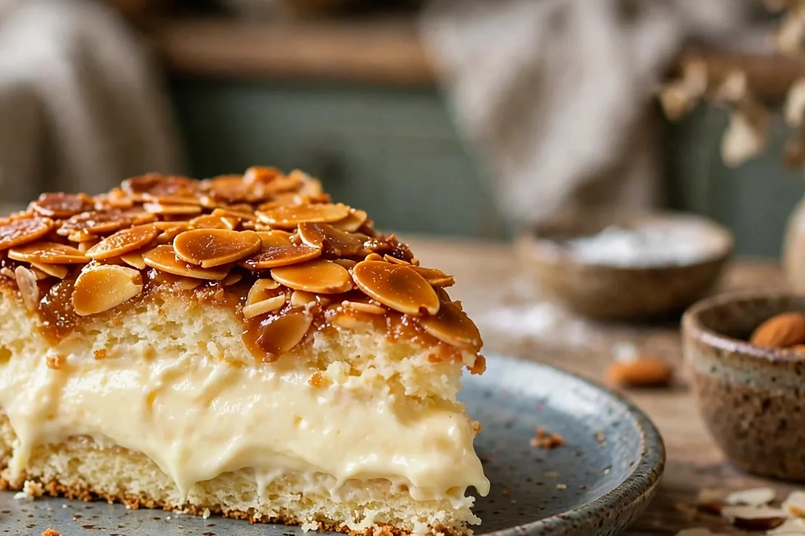

Bienenstich – mit Mandelkruste und Vanillecreme
Knusprige Mandelkruste oben, fluffiger Hefeteig unten und dazwischen eine feine Vanillecreme – Bienenstich ist für mich der König der Blechkuchen. Er braucht ein paar Handgriffe, aber jeder einzelne lohnt sich beim ersten Bissen.

Inhaltsverzeichnis
Zutaten
Zubereitung
- Für den Hefeteig die Hefe in der lauwarmen Milch mit 1 TL Zucker auflösen. Mit Mehl, restlichem Zucker, Butter, Ei und Salz zu einem glatten Teig kneten und zugedeckt 45 Minuten gehen lassen.
- Für den Belag Butter, Zucker, Honig und Sahne in einem Topf schmelzen und kurz aufkochen. Die Mandelblättchen unterrühren und die Masse etwas abkühlen lassen.
- Den Teig auf einem mit Backpapier belegten Blech (ca. 30 × 40 cm) oder in einer gefetteten Springform (26 cm) gleichmäßig ausrollen bzw. ausbreiten.
- Die Mandelmasse gleichmäßig auf dem Teig verteilen. Im vorgeheizten Ofen bei 180 °C Ober-/Unterhitze 25–30 Minuten backen, bis die Kruste goldbraun und knusprig ist.
- Den Kuchen vollständig auskühlen lassen. Dann waagerecht halbieren – am besten erst in Stücke schneiden und jedes Stück einzeln aufschneiden, so bricht die Kruste nicht.
- Für die Füllung den Pudding mit 400 ml Milch und 2 EL Zucker nach Packungsangabe kochen und unter Rühren abkühlen lassen, bis er zimmerwarm ist.
- Die Sahne mit Sahnesteif steif schlagen und unter den Pudding heben.
- Die Creme auf den unteren Böden verteilen, die Oberteile aufsetzen und den Bienenstich 30 Minuten kalt stellen.

Tipp
Die Mandelkruste wird besonders knusprig, wenn die Masse vor dem Backen nicht zu heiß auf den Teig kommt. Reste unbedingt im Kühlschrank aufbewahren – die Creme macht den Kuchen nur einen Tag richtig frisch.
📌 Mehr Rezept-Ideen findest du auf unserem Pinterest-Profil:
Lecker Rezepte auf Pinterest
Lecker Rezepte auf Pinterest